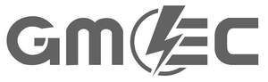

Trade Mark Journal No.2025/017 25 April 2025
UK00004188074 11 April 2025 (7,9,11,20)

- Class 7
- Kitchen machines, electric; Electric kitchen machines; Mixers [kitchen machines]; Kneaders [electric kitchen machines]; Liquidisers [kitchen machines]; Machines for slicing food [electric, kitchen]; Slicing machines (Electric -) for kitchen use; Kitchen machines (Electric -) for food preparation [other than cooking]; Electric blenders; Electric food blenders; Food blenders (Electric -); Blenders for food [electric]; Food blenders, electric; Electric blenders for household purposes; Blenders, electric, for household purposes; Electric food blenders [for household purposes]; Electric food blenders for domestic use; Domestic blenders [electric]; Electric mixers for mixing food; Mixers (Electric -) for mixing food; Electric kitchen appliances for chopping, mixing, pressing; Electric kitchen mixers; Electric juicers; Food mixers (Electric -); Electric kitchen tools; Electrical appliances used in kitchen for whisking; Electric juice extractors; Juice extractors, electric; Fruit grinders (Electric -); Electric fruit juice extractors; Fruit juice extractors, electric; Fruit juice extractors (Electric -); Food mixing machines for commercial use; Electric coffee grinders; Electric car washers.
- Class 9
- LED displays; LED monitors; LED drivers; LED display panels; Light-emitting diodes [LED]; LED [light-emitting diodes]; LED screen displays; Jump leads; LED [light-emitting diode] displays; Extension leads; Light emitting diode [LED] displays; Test leads; Electric leads; Battery leads; Cable jump leads; Electric extension leads; Extension leads [electric]; Electrical extension leads; Multimeter leads; Test leads [Electrical]; Portable power chargers; Power packs [batteries]; Portable power supplies (rechargeable batteries); Power packs [transformers]; Portable chargers; Power units [batteries]; Power supplies for smartphones; Electronic power supplies; Power supplies for smart phones; Battery packs; Electric power units; Electric power supply units; High-voltage power supplies; Power adapters; Low-voltage power supplies; Power adaptors; Voltage transformers; Electric voltage transformers; Electrical transformers; Mains transformers (Electric -); Electrical reducing transformers; Jump start cables; Jump cables; Battery jump starters; Power banks; Electric power supply sockets; Power wires; Power cables; Travel adaptors for electric plugs; Electrical travel adaptors; Plug adaptors; Electric plug adapters; Plug connections [electric]; Adapter plugs; Plug connectors; Connecting plugs (Electric -); Plug boxes [electric]; Sockets, plugs and other contacts [electric connections]; Plugs, sockets and other contacts [electric connections]; Sockets, plugs and other contacts [electric connectors]; Electric plugs; Plugs [electric]; Phone plugs; Electrical plugs; USB chargers adapted for car cigarette lighter sockets; Video telephones; Video intercom apparatus; Video cameras; Video door telephone apparatus; Video phones; Digital video cameras; Video surveillance cameras; Video devices; Video recorders; Electronic doorbells featuring a camera; 360º video cameras; Video projectors; Car video recorders; Digital video recorders; Downloadable video recordings; Ring stands for cell phones; Ring stands for mobile telephones; Mobile phone ring stands; Microphone stands; Camera stands; Electronic doorbells; Electric doorbells; Wireless battery chargers; USB Dongles [Wireless network adapters]; Alarm bells, electric; Bells (Alarm -), electric; Telephone intercom apparatus; Ring holders for mobile telephones; Electric door bells; Door bells (Electric -); Batteries for use with mobile telecommunication devices; Mobile phone ring holders; Mobile phone chargers; Mobile phone battery chargers; Battery chargers for mobile phones; Chargers for mobile phones; Cell phone battery chargers; Chargers for mobile telephones; Smartphone battery chargers; Devices for hands-free use of mobile phones; Electronic wirelessly enabled doorbells; Smart glasses; Smart watches; Smart home software; Smart house software; Smart locks; Smart home hubs; Smart speakers; Waterproof cases for smart phones; Smart door locks; Home automation devices; Fast chargers for mobile devices; Electronic kitchen timers; Electric thermostats; Batteries for electric vehicles; Electric battery chargers; Electric batteries for powering electric vehicles; Electric batteries; Battery charging devices for motor vehicles; Electric cables; Electric charging cables; Electric batteries for vehicles; Batteries, electric, for vehicles; Electric wires; Electric adapter cables; Electric wires and cables; Thermostats; Thermostat controllers; Room thermostats; Thermostat control apparatus; Climate control digital thermostats; Temperature control apparatus [thermostats] for vehicles; Air temperature sensors; Car charger; Smart meters; USB flash drives with micro USB connectors compatible with mobile phones; Electronic touch sensitive switches.
- Class 11
- Light bulbs; Light reflectors; Light shades; Light fixtures; Fluorescent light bulbs; Light diffusers; Diffusers (Light -); Halogen light bulb; Light projectors; Incandescent light bulbs; Strobe lights [light effects]; Light fittings; Compact fluorescent light bulbs; Light bulbs, electric; Electric light bulbs; Halogen light bulbs; Reflectors for light control; Light bars; Flourescent electric light bulbs; Fluorescent lamps with low ultra-violet light output; LED light bulbs; Electrical light bulbs; Light Emitting Diode lighting fixtures; Shades for light sources; Smart light bulbs; Miniature light bulbs; Light installations; Self-luminous light sources; Fixtures for incandescent light bulbs; Light bulbs for incandescent lamps; Light assemblies; Light emitting diode lights for automobiles; Electric light fittings; Ceiling light fittings; Light-emitting diode [LED] light bulbs; LED light strips; LED light machines; Neon lamps for illumination; Cord pendants [light fittings]; Spot lights for household illumination; Lights for incandescent lamps; Luminous tubes for lighting; Tubes (Luminous -) for lighting; Portable lamps [for illumination]; Glow sticks for lighting; Flashlight bulbs; Bulbs for lighting; Spot lights; Fluorescent lamps; Fan heaters; Extractor fans; Cooling fans; Radiant fan heaters; Ventilating fans; Fans for ventilating; Fans [air-conditioning]; Ceiling fans; Electric cooling fans; Electric bladeless fans; Electric fans; Electric fans for ventilation; Air conditioning fans; Fans for use in air conditioning; Room air fans; Table fans; Ventilating fans for household use; Ventilating fans for use in vehicles; Portable electric fans; Electric heating fans; Fans (Electric -) for personal use; Electric fans for personal use; Ceiling fans with integrated lights; Wearable electric fans; Electric fans with evaporative cooling devices; USB-powered desktop fans; Fans for hair drying; Electric fans for household use; Fans [parts of air-conditioning installations]; Electrically powered fans for ventilation purposes; Electric fans [for household purposes]; Air dehumidifiers; Installations for the cooling of air; Radiator heaters; Evaporators for air conditioners; Electric air conditioners; Portable air conditioners; Table lamps; Table top ovens; Table lamp (Lampshades for -); LED flashlights; LED lamps; LED luminaires; LED candles; LED safety lamps; LED mood lights; LED underwater lights; LED lights for automobiles; LED lighting installations; LED lighting fixtures; LED lighting assemblies for illuminated signs; LED [light-emitting diode] luminaires; Light-emitting diodes [LED] lighting apparatus; Rechargeable torches; Flashlights [torches]; Flashlights utilising electric rechargeable devices; Solar powered torches; Electric torches; Torches for lighting; Electric torches for lighting; Torches (Pocket -), electric; Pocket torches, electric; Electric pocket torches; Electric flashlights; Lightsticks, battery-operated; LED [light-emitting diode] lighting fixtures; Head torches; LED landscape lights; Portable hand lamps [for illumination]; Battery powered incandescent emergency lighting units; Battery-operated electric candles; Pocket torches; Battery powered fluorescent emergency lighting units; Portable headlamps; Portable electric heaters; Portable showers; Power showers; Electric heaters; Heaters; Electrical lamps; Electric beverage heaters; Electric immersion heaters; Electric heating installations; Electric bottle heaters; Electrical luminaires; Water heaters; Radiators, electric; Electric radiators; Electric water heating apparatus; Heating apparatus, electric; Electric heating apparatus; Electric heaters for babies' bottles; Electrical lamps for indoor lighting; Air heaters; Electric boilers; Laser light projectors; Fluorescent lights; Ceiling lights; Spot lamps for household illumination; Electric night lights; Incandescent lighting fixtures; Lighting lamps; Flood lights; Search lights; Lighting and lighting reflectors; Lamp bulbs; Strings of lights [rope lights]; Solar lights; Strings of coloured lights; Lighting; Cooking appliances; Appliances for cooking; Solar lamps; Electric lighting; Electrical lamps for outdoor lighting; Electric lighting installations; Solar powered lamps; Electric lighting fixtures; Electric indoor lighting installations; Outdoor lighting; Lighting installations; Luminaires for outdoor lighting; Electric indoor lighting apparatus; Lighting transformers; Electric apparatus for lighting; Electric lighting apparatus; Thermal storage apparatus [solar energy] for heating; Electric lights; Camping lanterns; Portable electric fires; Electric cooking stoves; Filters for use with torches; Electric outdoor grills; Lamps for tents; Electric lanterns; Electric cooking utensils; Cooking utensils, electric; Electric utensils for cooking; Flashlight pointers; Air purifiers; Filters for air purifiers; Electric air purifiers; Air humidifiers; Air purifiers for automobiles; Air conditioners; Room air conditioners; Apparatus for purifying air; Smart refrigerators.
- Class 20
- Hand fans; Hand-held folding fans; Hand-held flat fans.
Tanner Miller Ltd